greek clean

designing a simple way to manage campus waste more responsibly

bins overflow. fines pile up. nobody knows who to call.
Fraternities and sororities frequently host events where bins overflow before city pickups — creating frustration, mess, and fines. Students relied on slow, outdated systems: city websites, phone calls, no confirmation. Responsibility was unclear, costs were unpredictable, and flexible scheduling was impossible for unpredictable college events.
- shared platform enables easier coordination between students, campus facilities, and waste haulers
- scheduling tools and reminders prevent overflow and encourage proper disposal
- flexible pricing and student-run crews make responsible waste management accessible
- visible waste statistics reward cleanup efforts and build accountability
- unpredictable costs varying by size, timing, and provider
- service reliability dependent on trustworthy partners
- regional policy and compliance variations across campuses
- user responsibility and cooperation requirements
six interviews. sixty-four survey responses. two days.
Conducted six in-depth interviews plus a Google Forms survey across UT Austin fraternities and sororities. The survey received 64 responses within two days — validating the problem quickly and surfacing clear patterns in how students experience post-party waste.
- overflowing bins represent the biggest post-party problem — students had no reliable way to address it quickly
- cost significantly influences cleanup decisions — students needed upfront pricing before committing
- unclear responsibility creates delays and frustration — no single person owned the cleanup process
- flexible scheduling was needed — event times are unpredictable and city pickup schedules don't match
- two main personas emerged: the event organizer (proactive, stressed about fines) and the casual member (reactive, unsure of their role)
mapping the mess before cleaning it up
User journey mapping helped visualize the full experience — from recognizing a mess to final cleanup — focusing on emotional touchpoints and frustration areas. Three core flows were redesigned from scratch.
Five main navigation sections structured around the core jobs users needed to get done.
Low and mid-fidelity sketches explored layouts and navigation before moving to digital. Emphasis on clear progress indicators and large, tappable buttons. Mid and high-fidelity Figma prototypes tested transitions, button placement, and messaging — user feedback directly shaped confirmation screens and icon labeling.
five students. three tasks. a lot of surprises.
Five students tested three core tasks: scheduling a pickup, renting a dumpster, and finding a nearby bin. The sessions surfaced five clear patterns that reshaped the final design.